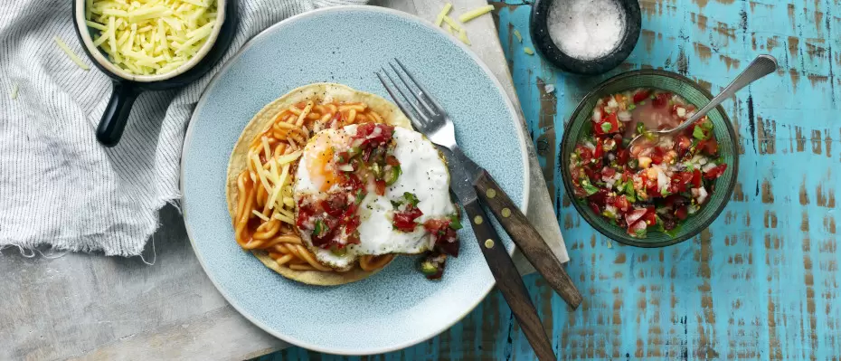

Home

Description
Scrumptious spaghetti on tostadas with eggs and a side of pico de gallo. A delicious start to the day!
Ingredients
- 4 corn tortillas
- 2 Tbsp olive oil
- ½ small onion
- 1 green chilli
- 2 Tbsp lime juice
- 3 large tomatoes
- ¼ cup finely chopped coriander
- 420 g can Wattie's Spaghetti
- ½ cup grated tasty cheese
- 4 eggs, fried or scrambled
- Options for garnish - coriander, sliced avocado, Mexican hot sauce, sour cream, crumbled feta
Steps
- Preheat the oven to 180°C fan assisted. Line two baking trays with baking paper. Brush both sides of the tortillas lightly with olive oil and place onto the baking trays. Bake for 8 to 10 minutes, turning halfway through until the tortillas are golden and crisp. Remove from the oven and set aside.
- To prepare the Pico de Gallo, finely chop the onion and chilli and place into a medium bowl with the lime juice and salt to taste. Let it marinate while you prepare the tomatoes and coriander. Cut the tomatoes in half and remove the core and seeds. Finely chop the flesh and place into the bowl. Stir in the coriander.
- Warm the Wattie's Spaghetti in a small saucepan over medium heat.
- To assemble, spoon some of the warmed spaghetti onto each tostada. Top with a sprinkle of cheese, cooked egg and some Pico de Gallo.
- Serve with your choice of garnishes.